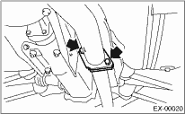
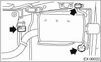

EXHAUST(H4DOTC) > Muffler
1. Set the vehicle on a lift.
2. Lift up the vehicle.
3. Separate the muffler from rear exhaust pipe.
CAUTION:
Be careful, exhaust pipe is hot.

4. Apply a coat of spray type lubricant to the mating area of cushion rubber.
5. Remove the cushion rubber, and detach the muffler.
CAUTION:
Be careful not to drop the muffler during removal.
